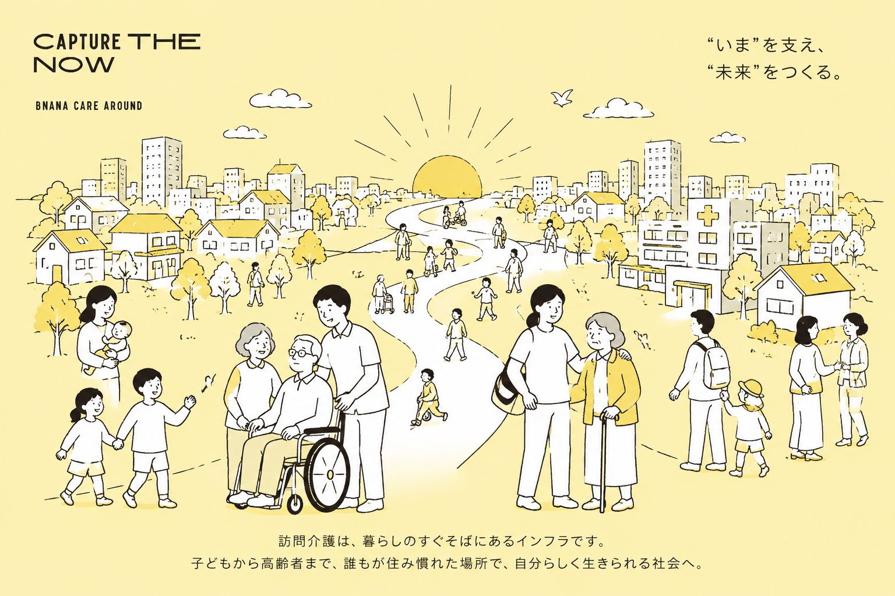

住み慣れた我が家で、自分らしく。
“いま”を支え、“未来”をつくる。
ばななケアラウンドは、大阪市東淀川区に事業所を構える訪問介護サービス事業所です。利用者さまお一人おひとりのペースに寄り添い、子どもから高齢者まで、誰もが住み慣れた場所で自分らしく生きられる地域づくりを目指しています。
身体介護から生活援助まで、必要なサービスを組み合わせてご提供します。
入浴介助、排泄ケア、食事の介助など、毎日の生活に必要なサポートを丁寧に行います。安全に、そして気持ちよく過ごしていただくことを大切にしています。
掃除・洗濯・調理・買い物など、日常の家事をサポートします。住み慣れたご自宅で、快適に過ごし続けるためのお手伝いです。
通院や買い物、外出時の付き添いをサポートします。一人では不安な移動も、安心してお出かけいただけます。
資格を持った専門スタッフが、地域に密着してサポートしています。
わたしたちが日々働いている場所と、雰囲気をご紹介します。